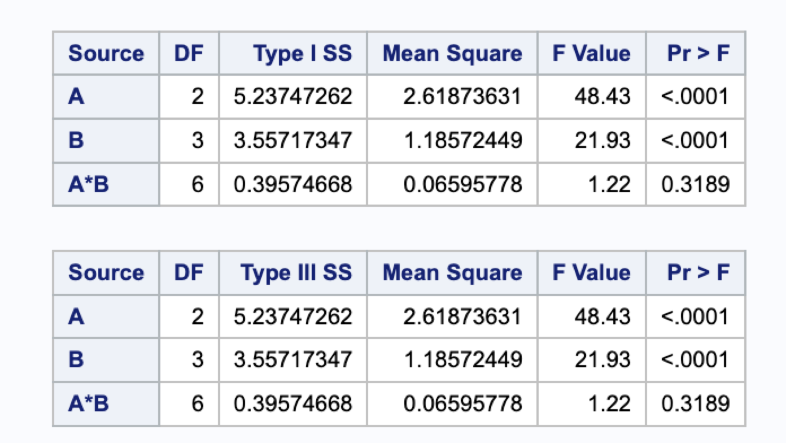

hw8
Question 1 (From lab10.1)
1.1: What differences do you see in the relationships between the SS for A, B and A*B for balanced versus unbalanced data?
Answer:
Figure: SS in balanced data
Figure: SS in unbalanced data
In unbalanced data, the SS for A, B, and A*B in both I SS and III SS are smaller than the corresponding values in balanced data which should be due to the fact that we exclude 4 observations in the unbalanced data. The SSI and SSIII in balanced data are equivalent because factors are independent but the SSI and SSIII in unbalanced data are not equivalent because factors are not independent.
1.2: For the balanced and unbalanced data, provide a 2 x 3 table of cell means. By hand, compute the (unadjusted) factor means and least square (adjusted) means for each data set.
Answers:
Figure: Balanced Table
Unadjusted means:
\(A_{1.}\): \(\frac{0.204+0.17+0.181+0.167+0.182+0.187+0.202+0.198+0.236}{9}\approx 0.192\)
\(A_{2.}\): \(\frac{0.257+0.279+0.269+0.283+0.235+0.26+0.256+0.281+0.258}{9}\approx 0.264\)
\(B_{.1}\): \(\frac{0.204+0.17+0.181+0.257+0.279+0.269}{6}\approx 0.227\)
\(B_{.2}\): \(\frac{0.167+0.283+0.182+0.235+0.187+0.26}{6}\approx 0.219\)
\(B_{.3}\): \(\frac{0.202+0.256+0.198+0.281+0.236+0.258}{6}\approx 0.239\)
adjusted mean:
\(\mu_{11}=\frac{0.204+0.17+0.181}{3}\approx 0.185\)
\(\mu_{12}=\frac{0.167+0.182+0.187}{3}\approx 0.179\)
\(\mu_{13}=\frac{0.202+0.198+0.236}{3}\approx 0.212\)
\(\mu_{21}=\frac{0.257+0.279+0.269}{3}\approx 0.268\)
\(\mu_{22}=\frac{0.283+0.235+0.26}{3}\approx 0.259\)
\(\mu_{23}=\frac{0.256+0.281+0.258}{3}\approx 0.265\)
\(A_{1.}=\frac{0.185+0.179+0.212}{3}=0.192\)
\(A_{2.}=\frac{0.268+0.259+0.265}{3}=0.264\)
\(B_{.1}=\frac{0.185+0.268}{2}=0.227\)
\(B_{.2}=\frac{0.179+0.259}{2}=0.219\)
\(B_{.3}=\frac{0.212+0.265}{2}=0.239\)
Figure 2: Unbalanced Table
Unadjusted means:
\(A_{1.}\): \(\frac{0.204+0.17+0.167+0.182+0.187+0.202}{6}\approx 0.185\)
\(A_{2.}\): \(\frac{0.257+0.279+0.283+0.235+0.26+0.256+0.281+0.258}{8}\approx 0.264\)
\(B_{.1}\): \(\frac{0.204+0.17+0.257+0.279}{4}= 0.2275\)
\(B_{.2}\): \(\frac{0.167+0.283+0.182+0.235+0.187+0.26}{6}= 0.219\)
\(B_{.3}\): \(\frac{0.202+0.281+0.256+0.258}{4}= 0.24925\)
adjusted mean:
\(\mu_{11}=\frac{0.204+0.17}{2}=0.187\)
\(\mu_{12}=\frac{0.167+0.182+0.187}{3}\approx 0.179\)
\(\mu_{13}=\frac{0.202}{1}=0.202\)
\(\mu_{21}=\frac{0.257+0.279}{2}=0.268\)
\(\mu_{22}=\frac{0.283+0.235+0.26}{3}\approx 0.259\)
\(\mu_{23}=\frac{0.256+0.281+0.258}{3}\approx 0.265\)
\(A_{1.}=\frac{0.187+0.179+0.202}{3}=0.189\)
\(A_{2.}=\frac{0.268+0.259+0.265}{3}=0.264\)
\(B_{.1}=\frac{0.187+0.268}{2}=0.2275\)
\(B_{.2}=\frac{0.179+0.259}{2}=0.219\)
\(B_{.3}=\frac{0.202+0.265}{2}=0.2335\)
1.3: Write code and estimate the contrast for comparing the difference between auditory and visual when elapse time is 10 sec to the difference between auditory and visual when elapse time is 15 sec.
Answers:
Figure: Code
Figure: Output
Question 2

(a) Answers:
Figure: Two way ANOVA with interaction

We drop the interaction term because it is not significant. Here is the model after dropping the interaction term.
Figure: Two way anova without interaction
(b) Answers:
Figure: Diagnostics Plots
Figure: Distribution of B
Figure: Distribution of A

By observing the above plots, we can see the normality is met but the constancy of variance across group is not met.
(c) Answers:
(d) Answers:
\(e^{0.187}\approx 1.206\)
The median survival time for animal is about 20 percent higher for poison 1 compared to poison 2.
We are 95% confident that the true medians of animals between poison group 1 and poison group 2 lies in the interval (0.0182, 0.3552) on the original scale of survtime.
(e) Answers:
The point estimate is roughly -0.394. The 95% confidence interval is (-0.669, -0.119)
Question 3
Answer:
Here are quantities we need to use:
\(\bar{Y}_{1..}=\frac{13+6+4}{3}\approx 7.67\) \(\bar{Y}_{2..}=\frac{17+12+8}{3}\approx 12.33\)
\(\bar{Y}_{.1.}=\frac{13+17}{2}=15\) \(\bar{Y}_{.2.}=\frac{6+12}{2}=9\) \(\bar{Y}_{.3.}=\frac{4+8}{2}=6\)
Here are what we are looking for:
\(\mu = \bar{Y}_{...}=\frac{13+6+4+17+12+8}{6}=10\)
\(\alpha_1=\bar{Y}_{1..}-\bar{Y}_{...}=7.67-10=-2.33\)
\(\alpha_2=\bar{Y}_{2..}-\bar{Y}_{...}=12.33-10=2.33\)
\(\beta_1=\bar{Y}_{.1.}-\bar{Y}_{...}=15-10=5\)
\(\beta_2=\bar{Y}_{.2.}-\bar{Y}_{...}=9-10=-1\)
\(\beta_3=\bar{Y}_{.3.}-\bar{Y}_{...}=6-10=-4\)
\((\alpha\beta)_{11}=\bar{Y}_{11}-(\mu+\alpha_1+\beta_1)=13-(10-2.33+5)=0.33\) \((\alpha\beta)_{12}=\bar{Y}_{12}-(\mu+\alpha_1+\beta_2)=6-(10-2.33-1)=-0.67\) \((\alpha\beta)_{13}=\bar{Y}_{13}-(\mu+\alpha_1+\beta_3)=4-(10-2.33-4)=0.33\) \((\alpha\beta)_{21}=\bar{Y}_{21}-(\mu+\alpha_2+\beta_1)=17-(10+2.33+5)=-0.33\) \((\alpha\beta)_{22}=\bar{Y}_{22}-(\mu+\alpha_2+\beta_2)=12-(10+2.33-1)=0.67\) \((\alpha\beta)_{23}=\bar{Y}_{23}-(\mu+\alpha_2+\beta_3)=8-(10+2.33-4)=-0.33\)